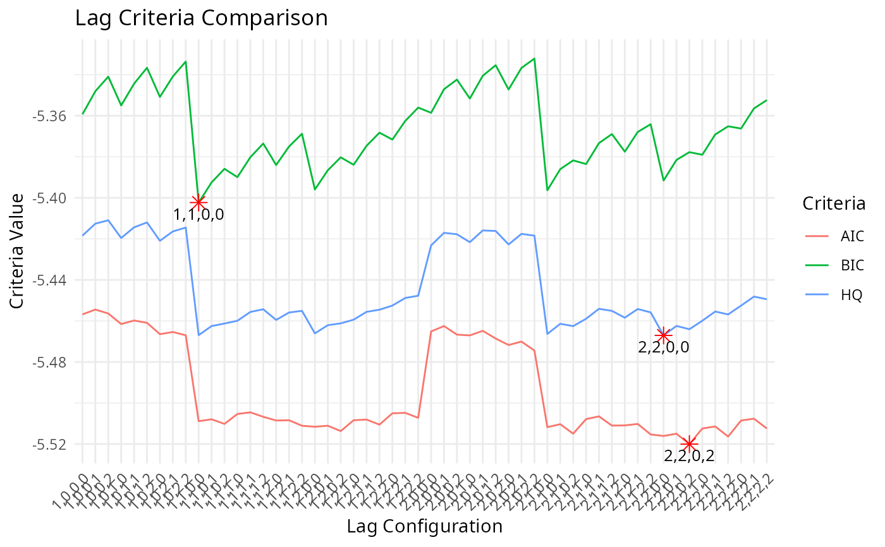

Estimate a Restricted ECM Model
ecm.RdThe `ecm` function estimates a restricted Error Correction Model (ECM) based on the provided data and model specification. This function is designed to test for cointegration using the PSS t Bound test, which assesses the presence of a long-term equilibrium relationship between the dependent variable and the independent variables in the model.
Usage
ecm(
data = NULL,
formula = NULL,
maxlag = NULL,
mode = NULL,
criterion = NULL,
differentAsymLag = NULL,
batch = NULL,
...
)Arguments
- data
The data of analysis
- formula
A formula specifying the long-run model equation. This formula defines the relationships between the dependent variable and explanatory variables, including options for deterministic terms, asymmetric variables, and a trend component.
Example formula:
y ~ x + z + Asymmetric(z) + Lasymmetric(x2 + x3) + Sasymmetric(x3 + x4) + deterministic(dummy1 + dummy2) + trendDetails
The formula allows flexible specification of variables and their roles:
Deterministic variables: Deterministic regressors (e.g., dummy variables) can be included using
deterministic(). Multiple deterministic variables may be supplied using+, for exampledeterministic(dummy1 + dummy2). These variables are treated as fixed components and are not associated with short-run or long-run dynamics.Asymmetric variables: Asymmetric decompositions can be specified for short-run and/or long-run dynamics:
Sasymmetric: Specifies short-run asymmetric variables. For example,
Sasymmetric(x1 + x2)applies short-run asymmetric decomposition tox1andx2.Lasymmetric: Specifies long-run asymmetric variables. For example,
Lasymmetric(x1 + x3)applies long-run asymmetric decomposition tox1andx3.Asymmetric: Specifies variables that enter both short-run and long-run asymmetric decompositions. For example,
Asymmetric(x1 + x3)applies asymmetric decomposition in both dynamics.
A trend term may be included to capture deterministic linear time trends by simply adding
trendto the formula.The formula also supports the use of
.to represent all available regressors in the supplied data (excluding the dependent variable), following standard R formula conventions.All of the operators
Deterministic(),Sasymmetric(),Lasymmetric(), andAsymmetric()follow the same usage rules:They can be freely combined within a single formula, for example:
y ~ . + Asymmetric(z) + Lasymmetric(x2 + x3) + Sasymmetric(x3 + x4) + deterministic(dummy1 + dummy2) + trendThey must not be nested within one another. Valid usage:
y ~ x + deterministic(dummy) + Asymmetric(z). Invalid usage (to be avoided):y ~ x + deterministic(Asymmetric(z))ory ~ x + Asymmetric(deterministic(dummy)).Where applicable, arguments are validated internally using
match.arg(). Consequently, abbreviated inputs are accepted provided they uniquely identify a valid option. For example, if"asymmetric"is an admissible value, specifying"a"is sufficient. For clarity and reproducibility, however, full argument names are recommended.
These components may therefore be combined flexibly to construct a specification tailored to the empirical analysis.
- maxlag
An integer specifying the maximum number of lags to be considered for the model. The default value is
4. This parameter sets an upper limit on the lag length during the model estimation process.details
The
maxlagparameter is crucial for defining the maximum lag length that the model will evaluate when selecting the optimal lag structure based on the specifiedcriterion. It controls the computational effort and helps prevent overfitting by restricting the search space for lag selection.If the data has a short time horizon or is prone to overfitting, consider reducing
maxlag.If the data is expected to have long-term dependencies, increasing
maxlagmay be necessary to capture the relevant dynamics.
Setting an appropriate value for
maxlagdepends on the nature of your dataset and the context of the analysis:For small datasets or quick tests, use smaller values (e.g.,
maxlag = 2).For datasets with more observations or longer-term patterns, larger values (e.g.,
maxlag = 8) may be appropriate, though this increases computational time.
examples
Using the default maximum lag (4)
kardl(data, MyFormula, maxlag = 4)Reducing the maximum lag to 2 for faster computation
kardl(data, MyFormula, maxlag = 2)Increasing the maximum lag to 8 for datasets with longer dependencies
kardl(data, MyFormula, maxlag = 8)- mode
Specifies the mode of estimation and output control. This parameter determines how the function handles lag estimation and what kind of feedback or control is provided during the process. The available options are:
"quick" (default): Displays progress and messages in the console while the function estimates the optimal lag values. This mode is suitable for interactive use or for users who want to monitor the estimation process in real-time. It provides detailed feedback for debugging or observation but may use additional resources due to verbose output.
"grid" : Displays progress and messages in the console while the function estimates the optimal lag values. This mode is suitable for interactive use or for users who want to monitor the estimation process in real-time. It provides detailed feedback for debugging or observation but may use additional resources due to verbose output.
"grid_custom": Suppresses most or all console output, prioritizing faster execution and reduced resource usage on PCs or servers. This mode is recommended for high-performance scenarios, batch processing, or when the estimation process does not require user monitoring. Suitable for large-scale or repeated runs where output is unnecessary.
User-defined vector: A numeric vector of lag values specified by the user, allowing full customization of the lag structure used in model estimation. When a user-defined vector is provided (e.g., `c(1, 2, 4, 5)`), the function skips the lag optimization process and directly uses the specified lags.
- Users can define lag values directly as a numeric vector. For example:
mode = c(1, 2, 4, 5)assigns lags of 1, 2, 4, and 5 to variables in the specified order. - Alternatively, lag values can be assigned to variables by name for clarity and control. For example:mode = c(CPI = 2, ER_POS = 3, ER_NEG = 1, PPI = 3)assigns lags to variables explicitly. - Ensure that the lags are correctly designated by verifying the result usingkardl_model$properLagafter estimation.Attention! -A function-based criterion or user-defined function can be specified for model selection, but this is only supported for
mode = "grid_custom"andmode = "quick". Themode = "grid"option is restricted to predefined criteria (e.g., AIC or BIC). For more information on available criteria, see themodelCriterionfunction documentation. - When using a numeric vector, ensure the order of lag values matches the variables in your formula. - If using named vectors, double-check the variable names to avoid mismatches or unintended results. - This mode bypasses the automatic lag optimization and assumes the user-defined lags are correct.
The `mode` parameter provides flexibility for different use cases: - Use `"grid"` mode for debugging or interactive use where progress visibility is important. - Use `"grid_custom"` mode to minimize overhead in computationally intensive tasks. - Specify a user-defined vector to customize the lag structure based on prior knowledge or analysis.
Selecting the appropriate mode can improve the efficiency and usability of the function depending on the user's requirements and the computational environment.
- criterion
A string specifying the information criterion to be used for selecting the optimal lag structure. The available options are:
"AIC": Akaike Information Criterion (default). This criterion balances model fit and complexity, favoring models that explain the data well with fewer parameters.
"BIC": Bayesian Information Criterion. This criterion imposes a stronger penalty for model complexity than AIC, making it more conservative in selecting models with fewer parameters.
"AICc": Corrected Akaike Information Criterion. This is an adjusted version of AIC that accounts for small sample sizes, making it more suitable when the number of observations is limited relative to the number of parameters.
"HQ": Hannan-Quinn Information Criterion. This criterion provides a compromise between AIC and BIC, favoring models that balance fit and complexity without being overly conservative.
The criterion can be specified as a string (e.g.,
"AIC") or as a user-defined function that takes a fitted model object. Please visit themodelCriterionfunction documentation for more details on using custom criteria.- differentAsymLag
A logical value indicating whether to allow different lag lengths for positive and negative decompositions.
- batch
A string specifying the batch processing configuration in the format "current_batch/total_batches". If a user utilize grid or grid_custom mode and want to split the lag search into multiple batches, this parameter can be used to define the current batch and the total number of batches. For example, "2/5" indicates that the current batch is the second out of a total of five batches. The default value is "1/1", meaning that the entire lag search is performed in a single batch.
- ...
Additional arguments that can be passed to the function. These arguments can be used to
Value
A list containing the results of the restricted ECM test, including:
ecm: The estimated ECM model objects including:case: The case number used in the test (1, 2, 3, 4, or 5).EcmResLagged: The lagged error correction term used in the ECM model.ecmL: The estimated long-run model object.shortrunEQ: The estimated short-run model equation object.longrunEQ: The estimated long-run model equation object.
argsInfo: A list of input arguments used for the estimation. It includes the data, formula, maxlag, mode, criterion, differentAsymLag, and batch settings.
extractedInfo: A list containing extracted information from the input data and formula, such as variable names, deterministic terms, asymmetric variables, and the prepared dataset for estimation.
timeInfo: A list containing timing information for the estimation process, including start time, end time, and total duration.
lagInfo: A list containing lag selection information, including the optimal lag configuration and criteria values for different lag combinations.
estInfo: A list containing estimation details, such as the type of model, estimation method, model formula, number of parameters (k), number of observations (n), start and end points of the fitted values, and total time span.
model: The fitted linear model object of class
lmrepresenting the estimated ARDL or NARDL model.
Hypothesis testing
The null and alternative hypotheses for the restricted ECM test are as follows:
$$\mathbf{H_{0}:} \theta = 0$$ $$\mathbf{H_{1}:} \theta \neq 0$$
The null hypothesis (\(H_{0}\)) states that there is no cointegration in the model, meaning that the long-run relationship between the variables is not significant. The alternative hypothesis (\(H_{1}\)) suggests that there is cointegration, indicating a significant long-term relationship between the variables.
The test statistic is calculated as the t-statistic of the coefficient of the error correction term (\(\theta\)) in the ECM model. If the absolute value of the t-statistic exceeds the critical value from the PSS t Bound table, we reject the null hypothesis in favor of the alternative hypothesis, indicating that cointegration is present.
The cases for the restricted ECM Bound test are defined as follows:
case 1: No constant, no trend.This case is used when the model does not include a constant term or a trend term. It is suitable for models where the variables are stationary and do not exhibit any long-term trends.
The model is specified as follows:
$$ \begin{aligned} \Delta y_t = \sum_{j=1}^{p} \gamma_j \Delta y_{t-j} + \sum_{i=1}^{k} \sum_{j=0}^{q_i} \beta_{ij} \Delta x_{i,t-j} + \theta (y_{t-1} - \sum_{i=1}^{k} \alpha_i x_{i,t-1} ) + e_t \end{aligned} $$
case 2: Restricted constant, no trend.This case is used when the model includes a constant term but no trend term. It is suitable for models where the variables exhibit a long-term relationship but do not have a trend component. The model is specified as follows: $$ \begin{aligned} \Delta y_t &= \sum_{j=1}^{p} \gamma_j \Delta y_{t-j} + \sum_{i=1}^{k} \sum_{j=0}^{q_i} \beta_{ij} \Delta x_{i,t-j} + \theta (y_{t-1} - \alpha_0 - \sum_{i=1}^{k} \alpha_i x_{i,t-1} ) + e_t \end{aligned} $$
case 3: Unrestricted constant, no trend.This case is used when the model includes an unrestricted constant term but no trend term. It is suitable for models where the variables exhibit a long-term relationship with a constant but do not have a trend component.
The model is specified as follows:
$$ \begin{aligned} \Delta y_t &= \sum_{j=1}^{p} \gamma_j \Delta y_{t-j} + \sum_{i=1}^{k} \sum_{j=0}^{q_i} \beta_{ij} \Delta x_{i,t-j} + \theta (y_{t-1} - \alpha_0 - \sum_{i=1}^{k} \alpha_i x_{i,t-1} ) + e_t \end{aligned} $$
case 4: Unrestricted Constant, restricted trend.This case is used when the model includes an unrestricted constant term and a restricted trend term. It is suitable for models where the variables exhibit a long-term relationship with a constant and a trend component.
The model is specified as follows:
$$ \begin{aligned} \Delta y_t &= \phi + \sum_{j=1}^{p} \gamma_j \Delta y_{t-j} + \sum_{i=1}^{k} \sum_{j=0}^{q_i} \beta_{ij} \Delta x_{i,t-j} + \theta (y_{t-1} - \pi (t-1) - \sum_{i=1}^{k} \alpha_i x_{i,t-1} ) + e_t \end{aligned} $$
case 5: Unrestricted constant, unrestricted trend.
The Error Correction Model (ECM) is specified as follows: $$ \begin{aligned} \Delta y_t &= \phi + \varphi t + \sum_{j=1}^{p} \gamma_j \Delta y_{t-j} + \sum_{i=1}^{k} \sum_{j=0}^{q_i} \beta_{ij} \Delta x_{i,t-j} + \theta (y_{t-1} - \sum_{i=1}^{k} \alpha_i x_{i,t-1} ) + e_t \end{aligned} $$
Examples
# Sample article: THE DYNAMICS OF EXCHANGE RATE PASS-THROUGH TO DOMESTIC PRICES IN TURKEY
kardl_set(
formula = CPI ~ ER + PPI + asym(ER) + deterministic(covid) + trend,
data = imf_example_data,
maxlag = 3
)
# Using the grid mode with batch processing to decrease execution time
ecm_model_grid <- ecm(mode = "grid")
#>
ecm_model_grid
#> Optimal lags for each variable ( AIC ):
#> CPI: 2, NAER_POS: 2, NAER_NEG: 0, PPI: 2
#>
#> Call:
#> lm(formula = shortrunEQ, data = EcmData)
#>
#> Coefficients:
#> (Intercept) EcmRes L1.d.CPI L2.d.CPI L0.d.NAER_POS
#> 1.861e-02 -1.384e-02 4.448e-01 -4.173e-02 1.149e-01
#> L1.d.NAER_POS L2.d.NAER_POS L0.d.NAER_NEG L0.d.PPI L1.d.PPI
#> 9.347e-02 9.679e-03 4.914e-02 6.999e-03 2.102e-02
#> L2.d.PPI covid trend
#> -5.382e-03 5.425e-03 -4.375e-05
#>
# Checking the cointegration test results using Pesaran t test
psst(ecm_model_grid)
#>
#> Pesaran-Shin-Smith (PSS) Bounds t-test for cointegration
#>
#> data: model
#> t = -3.6425
#> alternative hypothesis: Cointegrating relationship exists
#>
# Getting the details of psst result
summary(psst(ecm_model_grid))
#> Pesaran-Shin-Smith (PSS) Bounds t-test for cointegration
#> t = -3.642489
#> k = 3
#>
#> Hypotheses:
#> H0: Coef(EcmRes) = 0
#> H1: Coef(EcmRes)≠ 0
#>
#> Test Decision: Reject H0 → Cointegration (at 1% level)
#>
#> Critical Values (Case V ):
#> L U
#> 0.10 -3.13 -3.84
#> 0.05 -3.41 -4.16
#> 0.025 -3.65 -4.42
#> 0.01 -3.96 -4.73
#>
#> Notes:
#> • Trend detected in the model. Case automatically adjusted to 5 (unrestricted intercept and trend).
#>
# Using the grid_custom mode for faster execution without console output
ecm_model <- ecm(imf_example_data, mode = "grid_custom", criterion = "HQ", batch = "2/3")
ecm_model
#> Optimal lags for each variable ( HQ ):
#> CPI: 1, NAER_POS: 2, NAER_NEG: 0, PPI: 0
#>
#> Call:
#> lm(formula = shortrunEQ, data = EcmData)
#>
#> Coefficients:
#> (Intercept) EcmRes L1.d.CPI L0.d.NAER_POS L1.d.NAER_POS
#> 1.815e-02 -1.394e-02 4.154e-01 1.168e-01 9.272e-02
#> L2.d.NAER_POS L0.d.NAER_NEG L0.d.PPI covid trend
#> 6.635e-03 4.541e-02 -1.953e-03 4.998e-03 -4.241e-05
#>
# Estimating the model with user-defined lag values
ecm_model2 <- ecm(mode = c(2, 1, 1, 3))
# Getting the results
ecm_model2
#> Optimal lags for each variable ( AIC ):
#> CPI: 2, NAER_POS: 1, NAER_NEG: 1, PPI: 3
#>
#> Call:
#> lm(formula = shortrunEQ, data = EcmData)
#>
#> Coefficients:
#> (Intercept) EcmRes L1.d.CPI L2.d.CPI L0.d.NAER_POS
#> 1.879e-02 -1.421e-02 4.480e-01 -2.922e-02 1.150e-01
#> L1.d.NAER_POS L0.d.NAER_NEG L1.d.NAER_NEG L0.d.PPI L1.d.PPI
#> 8.085e-02 3.857e-02 7.378e-02 5.352e-03 1.761e-02
#> L2.d.PPI L3.d.PPI covid trend
#> -1.359e-02 -1.685e-02 4.482e-03 -4.053e-05
#>
# Getting the summary of the results
summary(ecm_model2)
#>
#> Call:
#> lm(formula = shortrunEQ, data = EcmData)
#>
#> Residuals:
#> Min 1Q Median 3Q Max
#> -0.066291 -0.008125 -0.000967 0.007027 0.099847
#>
#> Coefficients:
#> Estimate Std. Error t value Pr(>|t|)
#> (Intercept) 1.879e-02 2.512e-03 7.482 3.84e-13 ***
#> EcmRes -1.421e-02 3.752e-03 -3.787 0.000173 ***
#> L1.d.CPI 4.480e-01 4.453e-02 10.059 < 2e-16 ***
#> L2.d.CPI -2.922e-02 4.264e-02 -0.685 0.493482
#> L0.d.NAER_POS 1.150e-01 1.847e-02 6.227 1.09e-09 ***
#> L1.d.NAER_POS 8.085e-02 1.986e-02 4.072 5.51e-05 ***
#> L0.d.NAER_NEG 3.857e-02 4.845e-02 0.796 0.426383
#> L1.d.NAER_NEG 7.378e-02 4.806e-02 1.535 0.125395
#> L0.d.PPI 5.352e-03 8.254e-03 0.648 0.517029
#> L1.d.PPI 1.761e-02 9.115e-03 1.932 0.053946 .
#> L2.d.PPI -1.359e-02 9.214e-03 -1.475 0.140875
#> L3.d.PPI -1.685e-02 8.365e-03 -2.014 0.044618 *
#> covid 4.482e-03 3.747e-03 1.196 0.232270
#> trend -4.053e-05 8.226e-06 -4.928 1.17e-06 ***
#> ---
#> Signif. codes: 0 ‘***’ 0.001 ‘**’ 0.01 ‘*’ 0.05 ‘.’ 0.1 ‘ ’ 1
#>
#> Residual standard error: 0.01542 on 452 degrees of freedom
#> Multiple R-squared: 0.6203, Adjusted R-squared: 0.6094
#> F-statistic: 56.8 on 13 and 452 DF, p-value: < 2.2e-16
#>
# Alternative specification
summary(ecm(imf_example_data, CPI ~ PPI + asym(ER) + trend, case = 4))
#>
#> Call:
#> lm(formula = shortrunEQ, data = EcmData)
#>
#> Residuals:
#> Min 1Q Median 3Q Max
#> -0.068335 -0.008206 -0.001157 0.006550 0.098538
#>
#> Coefficients:
#> Estimate Std. Error t value Pr(>|t|)
#> (Intercept) 1.751e-02 2.375e-03 7.373 8.00e-13 ***
#> EcmRes -1.718e-02 3.055e-03 -5.623 3.28e-08 ***
#> L1.d.CPI 4.530e-01 4.451e-02 10.178 < 2e-16 ***
#> L2.d.CPI -3.108e-02 4.261e-02 -0.730 0.4661
#> L0.d.PPI 5.638e-03 8.274e-03 0.681 0.4960
#> L1.d.PPI 1.746e-02 9.135e-03 1.912 0.0565 .
#> L2.d.PPI -1.351e-02 9.235e-03 -1.463 0.1442
#> L3.d.PPI -1.668e-02 8.385e-03 -1.990 0.0472 *
#> L0.d.NAER_POS 1.157e-01 1.851e-02 6.250 9.46e-10 ***
#> L1.d.NAER_POS 8.638e-02 1.905e-02 4.535 7.39e-06 ***
#> L0.d.NAER_NEG 6.431e-02 4.695e-02 1.370 0.1714
#> trend -3.565e-05 6.225e-06 -5.726 1.87e-08 ***
#> ---
#> Signif. codes: 0 ‘***’ 0.001 ‘**’ 0.01 ‘*’ 0.05 ‘.’ 0.1 ‘ ’ 1
#>
#> Residual standard error: 0.01546 on 454 degrees of freedom
#> Multiple R-squared: 0.6167, Adjusted R-squared: 0.6074
#> F-statistic: 66.4 on 11 and 454 DF, p-value: < 2.2e-16
#>
# For increasing the performance of finding the most fitted lag vector
ecm(mode = "grid_custom")
#> Optimal lags for each variable ( AIC ):
#> CPI: 2, NAER_POS: 2, NAER_NEG: 0, PPI: 2
#>
#> Call:
#> lm(formula = shortrunEQ, data = EcmData)
#>
#> Coefficients:
#> (Intercept) EcmRes L1.d.CPI L2.d.CPI L0.d.NAER_POS
#> 1.861e-02 -1.384e-02 4.448e-01 -4.173e-02 1.149e-01
#> L1.d.NAER_POS L2.d.NAER_POS L0.d.NAER_NEG L0.d.PPI L1.d.PPI
#> 9.347e-02 9.679e-03 4.914e-02 6.999e-03 2.102e-02
#> L2.d.PPI covid trend
#> -5.382e-03 5.425e-03 -4.375e-05
#>
# Setting max lag instead of default value [4]
ecm(maxlag = 2, mode = "grid_custom")
#> Optimal lags for each variable ( AIC ):
#> CPI: 1, NAER_POS: 1, NAER_NEG: 0, PPI: 0
#>
#> Call:
#> lm(formula = shortrunEQ, data = EcmData)
#>
#> Coefficients:
#> (Intercept) EcmRes L1.d.CPI L0.d.NAER_POS L1.d.NAER_POS
#> 1.778e-02 -1.396e-02 4.200e-01 1.170e-01 9.431e-02
#> L0.d.NAER_NEG L0.d.PPI covid trend
#> 4.268e-02 -1.735e-03 4.758e-03 -4.099e-05
#>
# Using another criterion for finding the best lag
ecm(criterion = "HQ", mode = "grid_custom")
#> Optimal lags for each variable ( HQ ):
#> CPI: 2, NAER_POS: 2, NAER_NEG: 0, PPI: 0
#>
#> Call:
#> lm(formula = shortrunEQ, data = EcmData)
#>
#> Coefficients:
#> (Intercept) EcmRes L1.d.CPI L2.d.CPI L0.d.NAER_POS
#> 1.905e-02 -1.444e-02 4.362e-01 -4.183e-02 1.178e-01
#> L1.d.NAER_POS L2.d.NAER_POS L0.d.NAER_NEG L0.d.PPI covid
#> 9.046e-02 9.602e-03 4.823e-02 -1.485e-03 5.218e-03
#> trend
#> -4.422e-05
#>
# For using different lag values for positive and negative decompositions
# Setting the same lags for positive and negative decompositions
kardl_set(differentAsymLag = FALSE)
diffAsymLags <- ecm(mode = "grid_custom")
diffAsymLags$lagInfo$OptLag
#> CPI NAER_POS NAER_NEG PPI
#> 2 2 2 2
# Setting different lags for positive and negative decompositions
sameAsymLags <- ecm(differentAsymLag = TRUE, mode = "grid_custom")
sameAsymLags$lagInfo$OptLag
#> CPI NAER_POS NAER_NEG PPI
#> 2 2 0 2
# Setting the prefixes and suffixes for nonlinear variables
kardl_reset()
kardl_set(AsymPrefix = c("asyP_", "asyN_"), AsymSuffix = c("_PP", "_NN"))
customizedNames <- ecm(imf_example_data, CPI ~ ER + PPI + asym(ER))
customizedNames
#> Optimal lags for each variable ( AIC ):
#> CPI: 2, asyP_ER_PP: 1, asyN_ER_NN: 0, PPI: 3
#>
#> Call:
#> lm(formula = shortrunEQ, data = EcmData)
#>
#> Coefficients:
#> (Intercept) EcmRes L1.d.CPI L2.d.CPI
#> 0.006415 -0.012739 0.511436 0.026934
#> L0.d.asyP_ER_PP L1.d.asyP_ER_PP L0.d.asyN_ER_NN L0.d.PPI
#> 0.113081 0.086826 0.101459 0.006790
#> L1.d.PPI L2.d.PPI L3.d.PPI
#> 0.019350 -0.013874 -0.017945
#>
# Optional plotting example requiring suggested packages
if (requireNamespace("dplyr", quietly = TRUE) &&
requireNamespace("tidyr", quietly = TRUE) &&
requireNamespace("ggplot2", quietly = TRUE)) {
LagCriteria <- ecm_model_grid$lagInfo$LagCriteria
colnames(LagCriteria) <- c("lag", "AIC", "BIC", "AICc", "HQ")
LagCriteria <- dplyr::mutate(
LagCriteria,
dplyr::across(c(AIC, BIC, HQ), as.numeric)
)
LagCriteria_long <- LagCriteria |>
dplyr::select(-AICc) |>
tidyr::pivot_longer(
cols = c(AIC, BIC, HQ),
names_to = "Criteria",
values_to = "Value"
)
min_values <- LagCriteria_long |>
dplyr::group_by(Criteria) |>
dplyr::slice_min(order_by = Value) |>
dplyr::ungroup()
ggplot2::ggplot(
LagCriteria_long,
ggplot2::aes(x = lag, y = Value, color = Criteria, group = Criteria)
) +
ggplot2::geom_line() +
ggplot2::geom_point(
data = min_values,
ggplot2::aes(x = lag, y = Value),
color = "red",
size = 3,
shape = 8
) +
ggplot2::geom_text(
data = min_values,
ggplot2::aes(x = lag, y = Value, label = lag),
vjust = 1.5,
color = "black",
size = 3.5
) +
ggplot2::labs(
title = "Lag Criteria Comparison",
x = "Lag Configuration",
y = "Criteria Value"
) +
ggplot2::theme_minimal() +
ggplot2::theme(
axis.text.x = ggplot2::element_text(angle = 45, hjust = 1)
)
}
